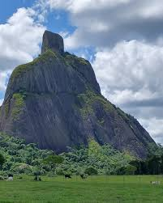

|  |
História: A área onde hoje fica Itamaraju já foi lar de índios pataxós e foi avistada pelos portugueses de Pedro Álvares Cabral em 1500, pois faz parte das "Serras Baixas" descritas na carta de Pero Vaz de Caminha. No século XIX, a região começou a ser explorada por causa do jacarandá e do alto valor do cacau.
|
| Economia: Atualmente, a economia de Itamaraju continua diversificada, com destaque para a agricultura (cultivo de cacau e café), pecuária (criação de gado bovino) e o setor de serviços. A cidade é um importante centro comercial do extremo sul baiano.
|
Turismo: Itamaraju é um destino que une natureza, história e cultura. Embora seja uma cidade do interior, ela está a poucos quilômetros de praias e oferece atrações como:
- Centro Histórico: Com casas coloniais que contam a história da cidade.
- Praias: Por estar perto do litoral, os visitantes podem aproveitar a tranquilidade das praias de municípios vizinhos.
- Parques e praças: A cidade conta com algumas áreas de lazer, como a Praça Castelo Branco e a Praça 2 de Julho.
- Paisagens Naturais: A região é marcada pela junção da Mata Atlântica com a proximidade do litoral.
Itamaraju se destaca por seu potencial de crescimento e por ser uma cidade com um forte comércio e uma diversidade de setores de negócios.
|